РАЗДАТОЧНАЯ КОРОБКА В СБОРЕ > РАЗБОРКА |
| 1. СНИМИТЕ ШЛАНГ |
Открепите зажим и снимите шланг.
| 2. СНИМИТЕ СЕПАРАТОР ПРАВОГО ПОДШИПНИКА РАЗДАТОЧНОЙ КОРОБКИ В СБОРЕ |
Выверните 5 болтов и снимите сепаратор подшипника.
| 3. СНИМИТЕ САЛЬНИК СЕПАРАТОРА ПРАВОГО ПОДШИПНИКА КАЧЕНИЯ РАЗДАТОЧНОЙ КОРОБКИ |
С помощью отвертки и молотка снимите сальник с сепаратора подшипника.
| 4. СНИМИТЕ КРЫШКУ КАРТЕРА РАЗДАТОЧНОЙ КОРОБКИ В СБОРЕ |
Выверните 4 болта и снимите крышку картера.
| 5. СНИМИТЕ МАСЛООТРАЖАТЕЛЬ САПУНА |
Снимите маслоотражатель.
| 6. ПОДСОЕДИНИТЕ СОЕДИНИТЕЛЬНЫЙ ФЛАНЕЦ ПЕРЕДНЕГО ВЫХОДНОГО ВАЛА В СБОРЕ |
С помощью зубила и молотка ослабьте накерненную часть контргайки.
| 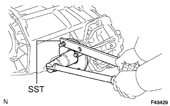 |
Удерживая соединительный фланец с помощью SST, отверните контргайку.
| 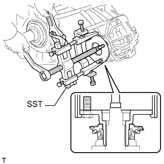 |
С помощью SST снимите соединительный фланец.
| 7. СНИМИТЕ САЛЬНИК ПЕРЕДНЕГО СОЕДИНИТЕЛЬНОГО ФЛАНЦА ВЫХОДНОГО ВАЛА РАЗДАТОЧНОЙ КОРОБКИ |
С помощью отвертки и молотка выбейте сальник из соединительного фланца.
| 8. СНИМИТЕ ПЕРЕДНИЙ САЛЬНИК КАРТЕРА РАЗДАТОЧНОЙ КОРОБКИ |
| 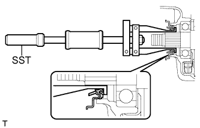 |
С помощью SST выбейте сальник.
| 9. ПОДСОЕДИНИТЕ СОЕДИНИТЕЛЬНЫЙ ФЛАНЕЦ ЗАДНЕГО ВЫХОДНОГО ВАЛА В СБОРЕ |
С помощью зубила и молотка ослабьте накерненную часть контргайки.
| 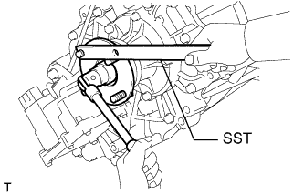 |
Удерживая соединительный фланец с помощью SST, отверните контргайку.
| 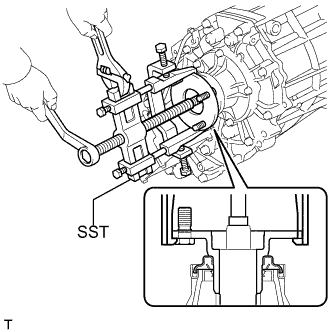 |
С помощью SST снимите соединительный фланец.
| 10. СНИМИТЕ САЛЬНИК ЗАДНЕГО СОЕДИНИТЕЛЬНОГО ФЛАНЦА ВЫХОДНОГО ВАЛА РАЗДАТОЧНОЙ КОРОБКИ |
С помощью отвертки и молотка выбейте сальник из соединительного фланца.
| 11. СНИМИТЕ ЗАДНИЙ САЛЬНИК КАРТЕРА РАЗДАТОЧНОЙ КОРОБКИ |
| 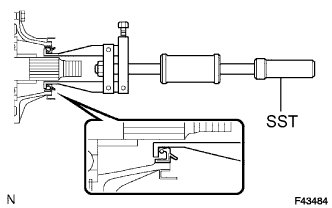 |
С помощью SST выбейте сальник.
| 12. СНИМИТЕ УДЛИНИТЕЛЬ КАРТЕРА РАЗДАТОЧНОЙ КОРОБКИ В СБОРЕ |
Выверните 5 болтов и снимите удлинитель картера.
| 13. СНИМИТЕ ШАЙБУ ВЫХОДНОГО ВАЛА РАЗДАТОЧНОЙ КОРОБКИ |
Снимите 2 шайбы.
| 14. СНИМИТЕ КОЛЬЦО |
Снимите кольцо.
| 15. СНИМИТЕ ЗАДНИЙ КАРТЕР РАЗДАТОЧНОЙ КОРОБКИ |
Выверните 12 болтов и снимите зажим.
Снимите задний картер раздаточной коробки.
| 16. СНИМИТЕ ВИЛКУ ПЕРЕКЛЮЧЕНИЯ ПЕРЕДАЧ РАЗДАТОЧНОЙ КОРОБКИ № 2 В СБОРЕ С СОЕДИНИТЕЛЬНОЙ МУФТОЙ ВЫСШЕЙ И НИЗШЕЙ ПЕРЕДАЧ РАЗДАТОЧНОЙ КОРОБКИ |
| 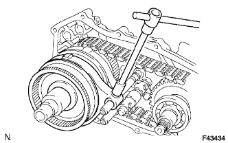 |
Выверните болт и снимите вилку переключения передач № 2 и соединительную муфту высшей и низшей передач.
| 17. СНИМИТЕ ВИЛКУ БЛОКИРОВКИ МЕЖОСЕВОГО ДИФФЕРЕНЦИАЛА В СБОРЕ С ПЕРЕДНЕЙ СОЕДИНИТЕЛЬНОЙ МУФТОЙ ПРИВОДА |
| 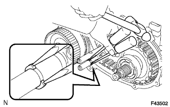 |
С помощью молотка и 2 отверток выбейте пружинное стопорное кольцо.
| 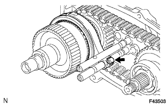 |
Выверните болт и снимите вилку блокировки межосевого дифференциала и переднюю соединительную муфту привода.
| 18. СНИМИТЕ ЗАДНИЙ ВЫХОДНОЙ ВАЛ В СБОРЕ, ПЕРЕДНЮЮ ПРИВОДНУЮ ЦЕПЬ И ВЕДОМУЮ ЗВЕЗДОЧКУ В СБОРЕ |
Зажмите задний картер раздаточной коробки в тисках.
С помощью съемника стопорных колец снимите пружинное стопорное кольцо.
Осторожно ударяя молотком с пластмассовым покрытием по заднем картеру раздаточной коробки, снимите задний выходной вал вместе с передней приводной цепью и ведомой звездочкой.
Снимите задний выходной вал, переднюю приводную цепь и ведомую звездочку.
| 19. СНИМИТЕ ПОДШИПНИК ВЕДОМОЙ ЗВЕЗДОЧКИ РАЗДАТОЧНОЙ КОРОБКИ |
| 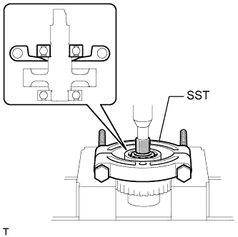 |
С помощью SST и пресса снимите подшипник ведомой звездочки.
| 20. СНИМИТЕ РАДИАЛЬНЫЙ ШАРИКОВЫЙ ПОДШИПНИК ПЕРВИЧНОЙ ШЕСТЕРНИ РАЗДАТОЧНОЙ КОРОБКИ |
| 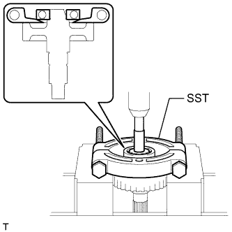 |
С помощью SST и пресса снимите радиальный шариковый подшипник первичной шестерни раздаточной коробки.
| 21. СНИМИТЕ ПРИВОД ПЕРЕКЛЮЧЕНИЯ РАЗДАТОЧНОЙ КОРОБКИ В СБОРЕ |
| 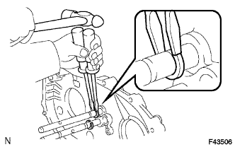 |
С помощью молотка и 2 отверток выбейте 2 пружинных стопорных кольца.
Выверните 3 болта и снимите привод переключения раздаточной коробки.
| 22. СНИМИТЕ ПРОБКУ НАЛИВНОГО ОТВЕРСТИЯ |
Снимите пробку наливной горловины и прокладку.
| 23. СНИМИТЕ ПРОБКУ СЛИВНОГО ОТВЕРСТИЯ |
Выверните пробку сливного отверстия и снимите прокладку.
| 24. СНИМИТЕ МАСЛООТДЕЛИТЕЛЬ РАЗДАТОЧНОЙ КОРОБКИ В СБОРЕ |
Выверните 3 болта и снимите маслоотделитель.
| 25. СНИМИТЕ МАГНИТ КАРТЕРА РАЗДАТОЧНОЙ КОРОБКИ |
| 26. СНИМИТЕ КОРПУС МАСЛЯНОГО НАСОСА РАЗДАТОЧНОЙ КОРОБКИ В СБОРЕ |
Выверните 3 болта и снимите корпус масляного насоса.
| 27. СНИМИТЕ КОЛЬЦЕВОЕ УПЛОТНЕНИЕ КОРПУСА МАСЛЯНОГО НАСОСА РАЗДАТОЧНОЙ КОРОБКИ |
| 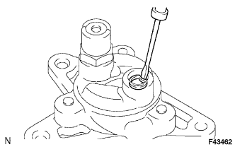 |
С помощью отвертки снимите кольцевое уплотнение корпуса масляного насоса.
| 28. СНИМИТЕ ШЕСТЕРНЮ МАСЛЯНОГО НАСОСА РАЗДАТОЧНОЙ КОРОБКИ |
Снимите шестерню масляного насоса раздаточной коробки.
| 29. СНИМИТЕ ПЛАНЕТАРНУЮ ПЕРЕДАЧУ НИЗШЕЙ СТУПЕНИ В СБОРЕ С ПЕРВИЧНЫМ ВАЛОМ РАЗДАТОЧНОЙ КОРОБКИ В СБОРЕ |
 |
С помощью съемника стопорных колец снимите пружинное стопорное кольцо.
Снимите планетарную передачу низшей ступени вместе с первичным валом.
| 30. СНИМИТЕ РАСПОРНУЮ ВТУЛКУ ВЫХОДНОГО ВАЛА РАЗДАТОЧНОЙ КОРОБКИ |
Снимите распорную втулку выходного вала раздаточной коробки.
| 31. СНИМИТЕ ПЕРЕДНИЙ ИГОЛЬЧАТЫЙ РОЛИКОВЫЙ ПОДШИПНИК ВЫХОДНОГО ВАЛА РАЗДАТОЧНОЙ КОРОБКИ |
Снимите игольчатый роликовый подшипник.
| 32. СНИМИТЕ ПРУЖИННОЕ СТОПОРНОЕ КОЛЬЦО ВАЛА СТОПОРА ПЕРВИЧНОЙ ШЕСТЕРНИ РАЗДАТОЧНОЙ КОРОБКИ |
| 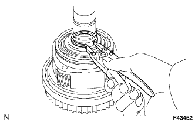 |
С помощью съемника стопорных колец снимите пружинное стопорное кольцо.
| 33. СНИМИТЕ СТОПОР ПЕРВИЧНОЙ ШЕСТЕРНИ РАЗДАТОЧНОЙ КОРОБКИ |
Снимите стопор первичной шестерни.
| 34. СНИМИТЕ ШАРИКОВЫЙ ФИКСАТОР ПЕРВИЧНОЙ ШЕСТЕРНИ РАЗДАТОЧНОЙ КОРОБКИ |
Извлеките шарик.
| 35. СНИМИТЕ ШАЙБУ ВОДИЛА ПЛАНЕТАРНОЙ ПЕРЕДАЧИ МЕХАНИЧЕСКОЙ РАЗДАТОЧНОЙ КОРОБКИ |
Снимите шайбу.
| 36. СНИМИТЕ ПЕРВИЧНЫЙ ВАЛ РАЗДАТОЧНОЙ КОРОБКИ |
Снимите первичный вал раздаточной коробки.
| 37. СНИМИТЕ КОЛЬЦО УПОРНОГО ПОДШИПНИКА РАЗДАТОЧНОЙ КОРОБКИ № 1 |
Снимите кольцо упорного подшипника.
| 38. СНИМИТЕ УПОРНЫЙ ПОДШИПНИК ПЛАНЕТАРНОЙ ПЕРЕДАЧИ НИЗШЕЙ СТУПЕНИ РАЗДАТОЧНОЙ КОРОБКИ |
Снимите подшипник.
| 39. СНИМИТЕ УПЛОТНИТЕЛЬНОЕ КОЛЬЦО ПЕРВИЧНОГО ВАЛА РАЗДАТОЧНОЙ КОРОБКИ № 1 |
| 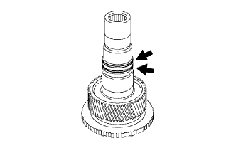 |
Снимите 2 уплотнительных кольца.
| 40. СНИМИТЕ ПОДШИПНИК ПЕРВИЧНОГО ВАЛА РАЗДАТОЧНОЙ КОРОБКИ |
С помощью съемника стопорных колец снимите пружинное стопорное кольцо.
| 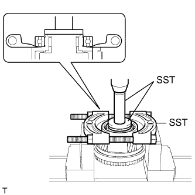 |
С помощью SST и пресса снимите подшипник первичного вала.
| 41. СНИМИТЕ ШЛИЦЕВУЮ ЧАСТЬ ПЛАНЕТАРНОЙ ПЕРЕДАЧИ НИЗШЕЙ СТУПЕНИ РАЗДАТОЧНОЙ КОРОБКИ |
| 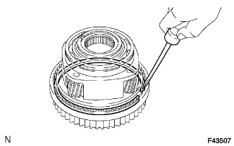 |
С помощью отвертки снимите пружинное стопорное кольцо.
Снимите шлицевую часть планетарной передачи низшей ступени.
| 42. СНИМИТЕ ПОДШИПНИК ПЛАНЕТАРНОЙ ПЕРЕДАЧИ НИЗШЕЙ СТУПЕНИ РАЗДАТОЧНОЙ КОРОБКИ |
| 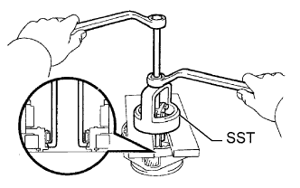 |
С помощью SST снимите подшипник планетарной передачи низшей ступени.
| 43. СНИМИТЕ РАСПОРНУЮ ВТУЛКУ ВЫХОДНОГО ВАЛА РАЗДАТОЧНОЙ КОРОБКИ № 2 |
С помощью съемника стопорных колец снимите пружинное стопорное кольцо.
Снимите распорную втулку.
| 44. СНИМИТЕ ШАРИК РАСПОРНОЙ ВТУЛКИ ВЫХОДНОГО ВАЛА РАЗДАТОЧНОЙ КОРОБКИ |
Извлеките шарик.
| 45. СНИМИТЕ КОРПУС МЕЖОСЕВОГО ДИФФЕРЕНЦИАЛА |
Снимите корпус межосевого дифференциала.
| 46. СНИМИТЕ СТУПИЦУ МУФТЫ РАЗДАТОЧНОЙ КОРОБКИ |
Снимите ступицу муфты раздаточной коробки.
| 47. СНИМИТЕ ПЕРЕДНИЙ ИГОЛЬЧАТЫЙ РОЛИКОВЫЙ ПОДШИПНИК ВЫХОДНОГО ВАЛА РАЗДАТОЧНОЙ КОРОБКИ |
Снимите игольчатый роликовый подшипник.
| 48. СНИМИТЕ ПЛОСКУЮ ШАЙБУ ВЫХОДНОГО ВАЛА РАЗДАТОЧНОЙ КОРОБКИ |
Снимите шайбу.
| 49. СНИМИТЕ ЗАДНИЙ РАДИАЛЬНЫЙ ШАРИКОВЫЙ ПОДШИПНИК ВЫХОДНОГО ВАЛА РАЗДАТОЧНОЙ КОРОБКИ |
| 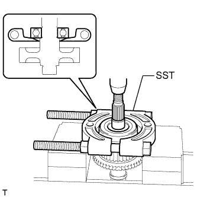 |
С помощи SST и пресса снимите подшипник.
| 50. СНИМИТЕ РАСПОРНУЮ ВТУЛКУ ВЫХОДНОГО ВАЛА РАЗДАТОЧНОЙ КОРОБКИ № 1 |
Снимите распорную втулку выходного вала.
| 51. СНИМИТЕ ВЕДУЩУЮ ЗВЕЗДОЧКУ РАЗДАТОЧНОЙ КОРОБКИ В СБОРЕ |
Снимите ведущую звездочку раздаточной коробки.
| 52. СНИМИТЕ ПОДШИПНИК ВЕДУЩЕЙ ЗВЕЗДОЧКИ РАЗДАТОЧНОЙ КОРОБКИ |
Снимите подшипник.
| 53. СНИМИТЕ ПЛОСКУЮ ШАЙБУ ВЫХОДНОГО ВАЛА РАЗДАТОЧНОЙ КОРОБКИ |
Снимите шайбу.
| 54. СНИМИТЕ ПРОБКУ КАРТЕРА РАЗДАТОЧНОЙ КОРОБКИ |
Снимите пробку картера раздаточной коробки.
| 55. СНИМИТЕ ПРУЖИНУ СЖАТИЯ |
Снимите пружину.
| 56. СНИМИТЕ ШТИФТЫ |
Снимите штифт.
| 57. СНИМИТЕ КОРОННУЮ ШЕСТЕРНЮ НИЖНЕЙ ПЛАНЕТАРНОЙ ПЕРЕДАЧИ РАЗДАТОЧНОЙ КОРОБКИ |
| 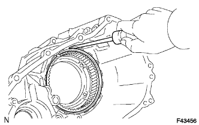 |
С помощью отвертки снимите пружинное стопорное кольцо.
Снимите коронную планетарной передачи низшей ступени с переднего картера раздаточной коробки.